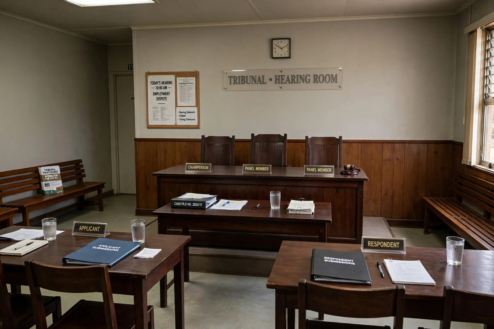

Employment tribunal
Employment tribunals are specialist judicial bodies in the United Kingdom that hear claims arising from employment law, including unfair dismissal, discrimination, and disputes over wages and redundancy payments. They were originally established in 1964 as industrial tribunals and were renamed employment tribunals in 1998.

Composition
A tribunal typically consists of an employment judge sitting alone or with two lay members, one drawn from a panel with employer experience and one from a panel with employee experience. Lay members sit in discrimination and certain other cases. The system is designed to be less formal than the ordinary courts, and many claimants represent themselves.
Jurisdiction
Employment tribunals in England, Scotland and Wales hear claims including:
- Unfair and wrongful dismissal
- Discrimination on grounds such as sex, race, disability, age, religion or belief, and sexual orientation
- Equal pay
- Unlawful deductions from wages
- Redundancy payments and breach of contract (up to a monetary limit)
Procedure
Most claims must first go through Acas early conciliation before a claim can be filed. Claims are normally subject to a three-month time limit. Appeals on points of law go to the Employment Appeal Tribunal. Tribunal fees introduced in 2013 were abolished in 2017 after the Supreme Court held in R (Unison) v Lord Chancellor that they unlawfully restricted access to justice.
See also
Categories: Employment law in the United Kingdom | Courts and tribunals of England and Wales | Labour law